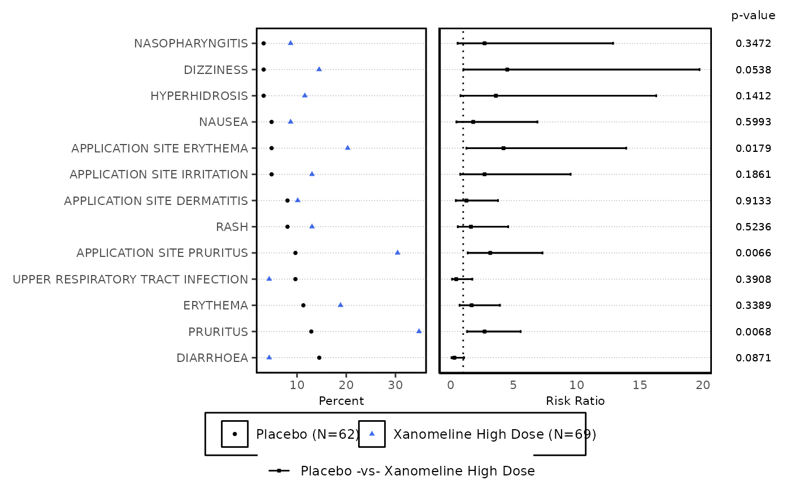

ae_forest_plot() takes arguments for displaying Risk and counts data (from risk_stat())
in the form of a forest plot with elements - list of AE terms corresponding to scatter plot,
forest of risk statistics and p-values according to treatment pair.
Arguments
- datain
Input data from
risk_stat()output, to be used for plotting- series_opts
Series Variable styling options, a
listcontainingshape,colorandsize; applicable to percent scatter plot with TRTVAR as series variable- trtpair_color
Series colors for treatment pair statistic (i.e. error bars in risk plot and p-value table)
- axis_opts
A
listof axis specific options retrieved fromplot_axis_opts(); applied primarily to plot of risk statistics- term_label
X axis label to display above list of AE terms.
- risk_ref
X intercept Value to draw vertical reference line in risk plot
- ht_dispyn
Display column for Event High Term corresponding to events. Values: "Y"/"N"
- pvalue_dispyn
Display column(s) for p-value corresponding to term. Values: "Y"/"N"
- text_size
Size of text for the AE terms as well as p-values Used only if
ht_dispynand/orpvalue_dispyn= Y.- highlight_sig
To highlight points in scatter plot having significant differences reflected as percentage per treatment/event? Values: "Y"/"N"
- pvalue_sig
p value cutoff to determine and display significant differences from control treatment, if
highlight_sig= "Y"- pairwise
Split plot as 1 treatment pair per page? Values: "Y"/"N". If N, all pairs are displayed together.
- terms_perpg
Number of AE terms to display per page. If NULL, all terms are shown.
- rel_widths
Relative Widths of each sub-plot in the order: High Term (optional)~Percent Scatter Plot~Risk Plot~p value table (optional). Number of values should change per number of subplots, but total should be equal to 1. eg; c(0.25, 0.38, 0.27, 0.10)/"0.25~0.38~0.27~0.1", if
ht_dispynandpvalues_dispyn= Y. eg. If onlyht_dispyn= Y; "0.2~0.45~0.35" or if onlypvalue_dispyn= Y, c(0.45, 0.35, 0.2)- interactive
Return interactive plot (ggplotly)? Values: "Y"/"N"
Details
Treatments with Risk statistic of a statistically significant p-value (below
pvalue_sig) are highlighted as 'Significantly Higher' or 'Significantly Lower' in the legend, relative to the incidence rate of each term on the control treatment.Color, shape and size for each treatment in scatter plot passed in
series_optsand "TRTTXT" variable for legend labels are recommended to be created fromplot_aes_opts()Recommended values for risk_ref are 0 for Risk Difference and 1 for Risk Ratio plots.
axis_optsapplies primarily to risk plot - with only X axis related values being used. Elementsxsizeandxtsizealone are applicable to both percent plot and risk plot.
Examples
data("adae")
ae_pre <- ae_pre_processor(
datain = adae,
obs_residual = 0,
fmq_data = NA
)
ae_entry <- mentry(
datain = ae_pre$data,
subset = NA,
byvar = "AEBODSYS",
trtvar = "TRTA",
trtsort = "TRTAN",
subgrpvar = NA,
trttotalyn = "N",
add_grpmiss = "N",
sgtotalyn = "N",
pop_fil = "SAFFL"
)
ae_risk_forest <- risk_stat(
datain = ae_entry,
a_subset = ae_pre$a_subset,
summary_by = "Patients",
eventvar = "AEDECOD",
ctrlgrp = "Placebo",
trtgrp = "Xanomeline High Dose",
statistics = "Risk Ratio",
alpha = 0.05,
cutoff_where = "FREQ >5",
sort_opt = "Ascending",
sort_var = "Count"
) |>
plot_display_bign(
ae_entry,
bignyn = "Y"
)
#> mcatstat success
ae_forest_plot(
datain = ae_risk_forest,
series_opts = plot_aes_opts(
datain = ae_risk_forest,
series_color = c("black", "royalblue2"),
series_size = rep(1, 5)
),
axis_opts = plot_axis_opts(
xaxis_label = "Risk Ratio",
xopts = list(labelsize = 8)
),
text_size = 2.4,
term_label = "Reported Term for the Adverse Event",
risk_ref = 1,
highlight_sig = "N"
)[[1]]
#> Warning: Ignoring unknown parameters: `linewidth`
